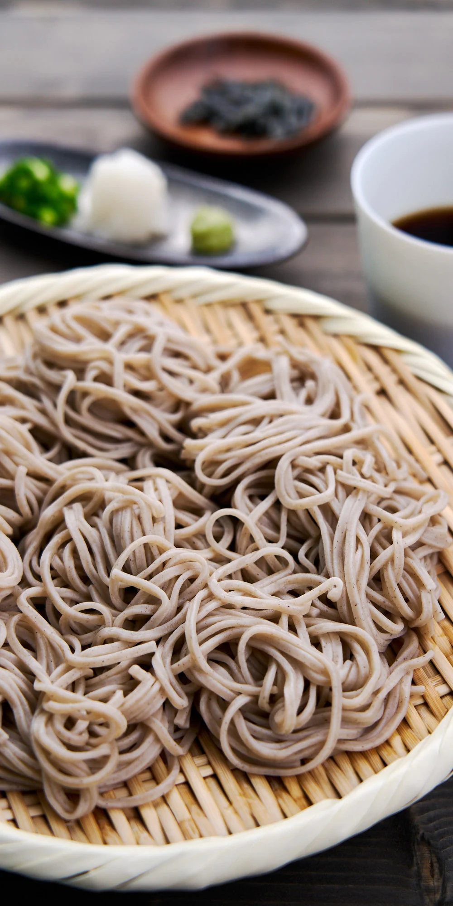

Mori Soba

A simple, elemental, cold soba plate perfect for the summertime.
This dish is a good way to gauge the worth/skill of a soba master simply due to the fact that this dish is comprised of only soba, garnishes, and dipping sauces. Luckily, for us we aren't under nearly as great of pressure. This is an easy, simple, and delicious dish thats perfect for hot summertime weather.
Ingredients
- 2 cups dashi
- 1/2 cup kaeshi
- 2 tablespoons mirin
- 4 servings soba(store bought or homemade)
- 1/2 cup finely sliced scallion
Steps
- Add the kaeshi and mirin to a saucepan and bring to a boil over medium heat. Allow dipping sauce to come to room temperature. Refrigerate for about 1 hour to cool and let flavors combine.
- Right before serving cook the soba. Drain the soba in a colander, then place the colander with the soba in a large bowl and rinse under cold running water until the noodles are cooled.
- To serve, divide the soba among 4 plates, pour the dipping sauce into 4 small cups, with 1 tablespoon of scallions on the side of each plate.
- To eat, add the scallions to the dipping sauce. Dip the soba into the sauce and slurp up with the scallions.